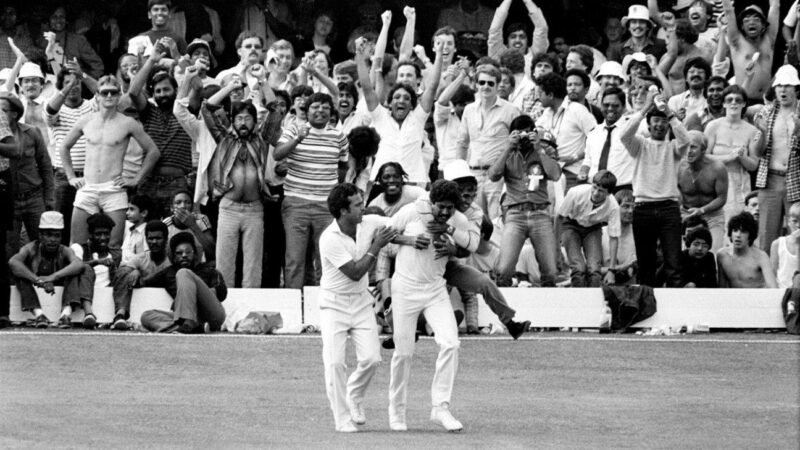
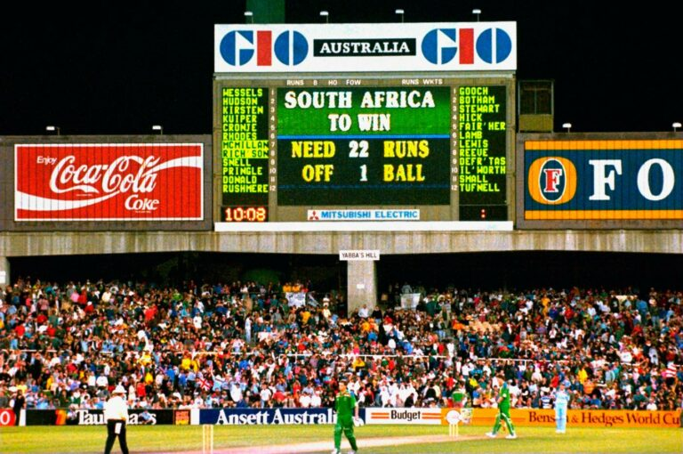
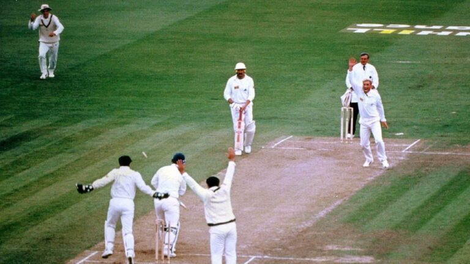
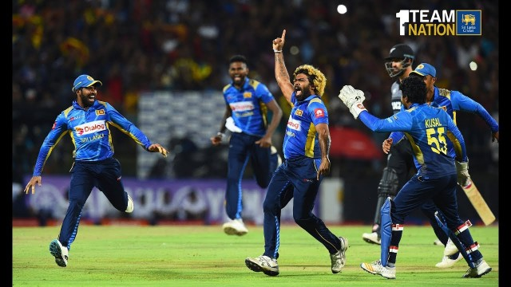

Special moments in cricket
Kapil’s Catch
Racking up an extraordinary 303 runs, seven catches and 12 wickets over eight matches at the 1983 World Cup, Kapil Dev is single-handedly credited with sparking a love affair with one-day cricket for millions of Indians. However, it was one of the most iconic catches in the history of the professional game that will be most fondly remembered from that fateful 1983 final.
“As Kapil Dev swirled and hovered, the whole of India held its breath,” commentator Henry Blofeld explained. “It was a fairly straightforward catch, but I can’t believe there was ever a more pressured one in World Cup history.”
Twenty-Two Runs off One Ball
This farcical end to a World Cup semi-final still smarts for thousands of South African cricket fans. It was a pretty controversial incident, wherein South Africa’s target was adjusted from 22 runs off 13 balls to an impossible 22 off one, following a 12-minute delay due to rain.
The often-disputed ‘lowest-scoring-over rain rules’ destroyed what had otherwise been a great game and a potentially nail-biting conclusion, sending England through to another World Cup final they were destined to lose.
Warne’s Ball of the Century
It was and is considered perhaps the most impressive and important delivery of all time. A single throw that completely transformed the way the world looked at both Warne himself and the art of bowling. The Daily Telegraph’s Tom Stangster explaining what happened as follows:
“After hitting an early boundary, Gatting took guard for his first ball from the young spinner. Warne began his run-up—just a few casual steps—before releasing the ball with an almighty flick of the wrist.
“The ball continued straight for three quarters of its flight, until the viciously spinning ball swerved wildly to the leg side. The ball pitched well outside the leg stump, gripping viciously, turning past Gatting’s outside edge to just clip off stump.”
Lasith Malinga's 4 in 4
The best hat-trick of the day we thought we would be seeing that day in the 3rd T20I against NZ in Pallekale was Dhanushka Gunatilake's 3 consecutive boundaries off of Seth Rance. Boy, could we not have been further away from the truth!
You can never write off hat-tricks nor a thrilling victory when Malinga is in the equation. A score less than 150 had never been defended at Pallekale before, and Malinga and Co. succeeded in bundling away New Zealand to a meagre 88.
As Lasith Malinga shredded through Munro (bowled), Rutherford (lbw), de Gradhomme (bowled) and Ross Taylor (lbw), he also became the first bowler to 100 T20I wickets and now has 5 hat-tricks: the most number of hat-tricks in international cricket.